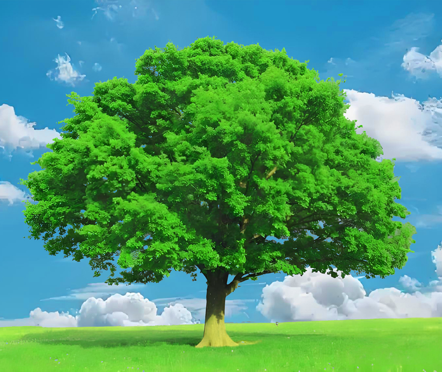

视频教程： https://youtu.be/ilO7pnA2m-A
视频中使用的素材：点击下载>> | 备用下载>>
操作步骤：
通道选择
进入通道面板 → 选择主体与背景对比最强的单色通道（通常最暗的通道）
复制该通道 → Ctrl+L调出色阶强化黑白对比
选区制作
用黑色画笔涂抹需要保留的区域（非主体部分涂黑）
Ctrl+左键载入选区 → Ctrl+Shift+I反选（选择主体）
抠出主体
返回RGB通道 → 回到图层面板 → Ctrl+J复制选区
删除原始背景层
背景合成
拖入新背景 → 创建剪贴蒙版
添加色相饱和度调整层匹配新环境色调
通道抠图法特别适合处理复杂边缘物体（如树木/毛发/透明材质）。关键是通过色阶调整最大化主体与背景的明暗反差，配合画笔工具精细化选区边缘。
以下是PS抠头发4成品效果
